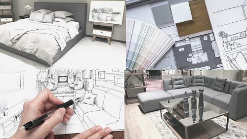
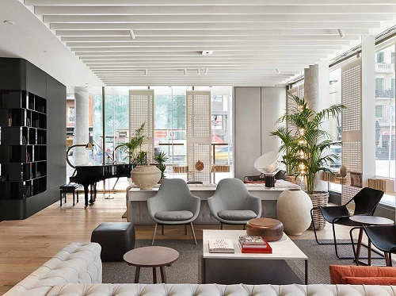
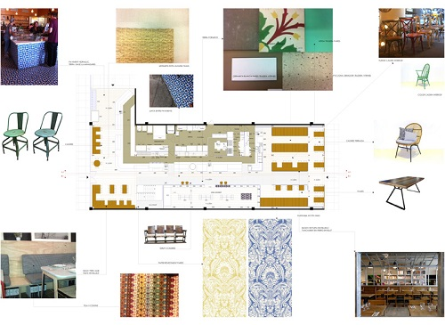
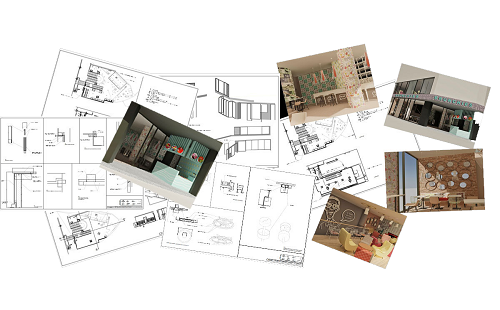

Proyectos contract & retail
Contamos con un departamento de interiorismo especializado en proyectos residenciales y comerciales. Los proyectos han sido desarrollados íntegramente por nuestro equipo. Nuestros profesionales son capaces de tomar las riendas de un proyecto o bien dar apoyo en áreas determinadas del proceso.
FASES DE UN PROYECTO DE INTERIORISMO
Para realizar un proyecto de Diseño de Interiores se realizan bocetos, planos escalados y perspectivas para poder definir las cuestiones más técnicas, que serán completados con detalles más puramente estéticos como el color, acabados, iluminación, materiales, tejidos, elementos decorativos… Todo proyecto de interiorismo, por pequeño que sea, tiene unas fases que el cliente debe conocer para saber exactamente a lo que se enfrenta.
TOMA DE DATOS:

En esta fase tienen lugar las primeras entrevistas y la primera toma de contacto con el cliente, en la que presentan las necesidades y el alcance del proyecto. Se estudian características bases del lugar y de su entorno, como la orientación, la incidencia de la luz natural, medidas…en definitiva, un estudio de todos los elementos que condicionarán el diseño final.
CONCEPTO:
Una vez realizada la toma de datos, se define la idea de proyecto, esta idea va a ir dando forma al proyecto y aparecerá plasmada en cada uno de los elementos que lo componen. En esta fase se realiza una primera propuesta más conceptual, en la que se empiezan a definir características generales del espacio que se va a diseñar, referencias de proyectos similares ya ejecutados, sensaciones que se quieren transmitir, colores, texturas, croquis a mano…
ANTEPROYECTO:
Se empieza a trabajar en plano para poder entregar al cliente los primeros planos de distribución, plantas, secciones e incluso perspectivas 3D en muchas ocasiones, todo ello completado con las texturas y materiales que se quiere utilizar para poder acercar al cliente lo máximo posible al resultado final.
ELABORACIÓN DE PRESUPUESTOS:
Se debe proceder a elaborar un presupuesto en el que se reflejará el coste total del proyecto. Se solicitan presupuestos a distintos proveedores y fabricantes para poder comparar y poder dar un precio real y competitivo.
PROYECTO DE EJECUCIÓN:
Se realizan los planos del proyecto de ejecución, en el que se plasmarán las ideas finales y que servirán de guía para todos los oficios que vayan a trabajar en la obra. En estos planos debe aparecer toda la información necesaria para que los trabajadores puedan realizar los trabajos correctamente, una especie de dossier en el que se recopilará toda la información referente al proyecto.
EJECUCIÓN DE LA OBRA:
En esta fase hay que organizar bien el calendario y organización de los trabajos que cada industrial para que no se molesten pero que no se retrase la fecha prevista de entrega. También es fundamental controlar los costes para cumplir con el presupuesto aceptado. Es importante tener previsto un tiempo destinado únicamente a los remates de obra, imprevistos y desperfectos que se pueden dar durante cualquier obra.